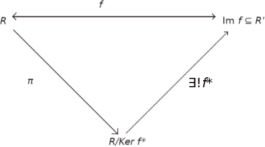

Fundamental theorem of ring homorpshims and isomorphism
6.5.1 Proposition (Fundamental theorem of ring homomorphism) Let R and R' two rings and let f: R ⟶ R' an homomorphsim between rings. Then there exists a unique isomorphim f* from R/Ker f to Imf
R/Ker f ≃ Imf
such that f* ∘ π = f, with π the canonical projection of R on R/Ker f.
Proof. If f* has to satisfy f = f* ∘ π, we must define it as follows
f* : R/Ker f ⟶ Im f
x + Ker f ⟼ f(x)
we now must check that
f* is well-defined, i.e. if [x] = [y] ⇒ f(x) = f(y)
f* is bijective.
f* is an homomorphism.
[x] = [y] ⇐⇒ x − y ∈ Ker f ⇐⇒ f(x − y) = 0 ⇐⇒ f(x) = f(y). Double implications prove at the same time that f* is well-defined and injective.
It is left to prove that f* is surjective: An element f(x) ∈ Imf, has counter image x ∈ R. And an element [x] is mapped through f* to f(x), hence f* is surjective Imf* = Imf.
f*([x] + [y]) = f*([x + y]) = f(x+y) = (being f an homomorphism) = f(x) + f(y) = f*([x]) + f*([y]). Analogously for the product.
It follows naturally from the definition of f* that f = f* ∘ π.
The theorem can be depicted in the following diagram.
This diagram tell us that there exist only one isomorphism f*, from R/Ker f to Im f for diagram to be commutative, that is such that f = f* ∘ π.□
If there exists an homomorphism f of R onto R', then R' is called an isomorphic image of R.
The theorem states that every homomorphic image of a ring R is isomorphic to a quotient ring R/I for some ideal I. Thus if you know all the quotient rings of R, then you know all the possible homomorphic images of R. The ideal I measures how much information is lost in passing from the ring R to the homomorphic image R/I.
Moreover to prove that a quotienti ring R/I is isomorphic to a ring R' it is sufficient to find an epimorphism φ from R' to R such that I = Ker φ.
6.5.2 Example Consider ℤ, the ring of integers and let n > 1 be a fixed integer and let In (= nℤ) be the set of all multiples of n; then In is an ideal of ℤ. If ℤn, is the integers mod n, define φ: ℤ ⟶ ℤn, by φ(a) = [a]. As is easily seen, φ is a homomorphism of ℤ onto ℤn, with kernel In. So by the Fundamental theorem of ring homomorphism, ℤn ≃ ℤ/In. (This should come as no surprise, for that is how we originally introduced ℤn.)
6.5.2 Proposition Let f an homomorphism between two rings R and R'. Then
if A is a subring of R, f(A) is a subring of R'.
if I is an ideal of R, f(I) is a ideal of f(R) (= Im f) (not necessarily of R').
if A' is a subring of R', f−1(A') is a subring of R containing Ker f.
if I' is a an ideal of R', f−1(I') is an ideal of R containing Ker f.
Note f−1(A') here means the preimage or "inverse image" i.e. the set {r ∈ R: f(r) ∈ A'}.
Proof.
Given two elements f(a) and f(a̅) of f(A), we have f(a) − f(a̅) = f(a − a̅) ∈ f(A) and f(a)f(a̅) = f(aa̅) ∈ f(I) since a − a̅ ∈ A and aa̅ ∈ A.
It is sufficient to prove that f(a)f(x) ∈ f(I) and f(x)f(a) ∈ f(I) because ax ∈ I. Analogously f(x)f(a) ∈ f(I).
Let a, a̅ ∈ f−1(A'), such that f(a) ∈ A' and f(a̅) ∈ A'. Then f(a − a̅) = f(a) − f(a̅) ∈ A', and f(aa̅) = f(a)f(a̅) ∈ A' hence a − a̅ and aa̅ are in f−1(A'). The last element contains Ker f, since ∀k ∈ Ker f, f(k) = 0R', which is contained in every ring A'.
Let x ∈ R and a ∈ f−1(I'). We must prove that xa and ax are in f−1(I'). Indeed, f(xa) = f(x)f(a) ∈ I' (since f(a) ∈ I'). Analogously f(ax) ∈ I'. In this case as well f−1(I') contains Ker f.□
6.5.3. Example. Let R = ℤ and R' = ℤ4 = ℤ/4ℤ, and f = π the canonical projection of ℤ on ℤ/4ℤ. Let A = 6ℤ. The elements of 6ℤ are distributed in only two classes of ℤ modulo 4ℤ. Considering the quotient modulo I = 4ℤ.
6ℤ + 4ℤ = {a + b | a in 6ℤ, b in 4ℤ}. For that, the mean the multiples of 6 in ℤ fall into only two of the four possible cosets of 4ℤ. In other words, out of the possible values 0,1,2,3 for what some n in ℤ can be mod 4, only two of those values come up when you look at just the n in 6ℤ.
π(A) = 6ℤ/4ℤ = [0, 2] = {I, 2+I}, because, a multiple of 6 divided by 4 can have as remainder either 0 or 2.
R/I = ℤ/4ℤ because every n in ℤ can be written uniquely as 4m + r where r is in {0,1,2,3} by the division algorithm. So R/I = {I, 1+I, 2+I, 3+I}. It's easy to see that π(A) is an ideal of R/I.
6.5.4. Corollary. Let R a ring, I one of its two-sided ideal and π: R ⟶ R/I, the canonical projection. Then
S subring (ideal) of R ⇒ π(S) = (S + I)/I is a subring (ideal) of R/I;
S subring (ideal) of R/I ⇒ π−1(S') is a subring (ideal) of R containing I.
Proof.
let S be a subring of R. π is a homomorphism between R and R/I, so by point 1 of 6.5.1, π(S) is a subring of R/I.
let S be an ideal of R. π is a homomorphism between R and R/I, so by point 2 of 6.5.1, π(S) is an ideal of π(R). Furthermore, π defined as r ⟼ r + I is a surjection, so π(R) = R/I. Therefore, π(S) is an ideal of R/I.
On why (S + I)/I = π(S) and π(s) is an element of (S + I)/I, π(s) = s + I by definition. Anything in (S + I)/I is some coset x + I where x is in the set S + I, so x is some s + i (s ∈ S, i ∈ I), so x + I = s + i + I = s + I = pi(s). Conversely, take any π(s) in π(S). π(s) = s + I = s + i + I with i = 0 in I.□
6.5.5. Theorem. (The Correspondence Theorem) Let R a ring, I one of its ideal and π: R ⟶ R/I the canonical projection. Let
𝓛 = {subrings (ideals) of R containing I}
𝓛'= {subrings (ideals) of R/I}
Then the mapping
Ψ : 𝓛 ⟶ 𝓛'
J ⟼ π(J) = J/I = {a + I : a ∈ J}
it is a bijection between 𝓛 and 𝓛'.
Proof. In the hypothesis (I ⊆ J ⊆ R), we have π(J) = J / I. If J is an ideal of R, then Ψ(J) is also an ideal R/I, for if r ∈ R and a ∈ J, then ra ∈ J, and so
(r + I) (a + I) = ra + I ∈ J/I
Notice tha J/I is not a ring with 1 in general, so it doesn't have ideals. However J/I *is* an ideal of R/I.
As stated in Corollary 6.5.4., Ψ maps a subring (ideal) of R containing I to a subring (ideal) of R/I, thus an element of 𝓛'. The application (by point b) of Corollary 6.5.4) Ψ*: 𝓛' ⟶ 𝓛 defined as
J' ⟼ π−1(J')
is the inverse application of Ψ, and the following relation hold true:
π−1(π(J)) = J
π(π−1(J')) = J'
π−1(π(J)) ⊃ J and π(π−1(J')) ⊂ J' are general properties of any map of sets and for arbitrary subsets. The equality π(π−1(J')) = J' holds for any surjective map of sets. We need to prove the double inclusion i.e. π−1(π(J)) ⊂ J, which requires J ⊃ I. Let x ∈ π−1(π(J)). Then π(x) ∈ π(J), i.e. there exist an element y ∈ I such that π(y) = π(x). Since π is a homomorphism, π(x − y) = 0 and x − y ∈ I = Ker π. Since y ∈ I and J ⊃ I, this implies that x ∈ J □.
6.5.6. Example. Determine all ideals of the quotient ring ℤ/12ℤ.
The ring is now made of elements of the sort z + 12ℤ with z ∈ ℤ. We must find (z + 12ℤ)(i + 12ℤ) = zi + 12ℤ. Using the correspondence theorem, find all ideals of ℤ containing 12ℤ and then use the Ψ to create the correspondence with the ideals of ℤ/12ℤ. For example if we take even numbers 2ℤ this is an ideal of 6.5. since an even number multiplied by an integer is again even: 12ℤ ⊂ 2ℤ. We have that mℤ ⊂ nℤ iff n | m, so these sets are
ℤ, 2ℤ, 3ℤ, 4ℤ, 6ℤ, 12ℤ
Then the ideals of ℤ/12ℤ are
ℤ/12ℤ, 2ℤ/12ℤ, 3ℤ/12ℤ, 4ℤ/12ℤ, 6ℤ/12ℤ, 12ℤ/12ℤ = {0}
12ℤ/12ℤ: this set is nothing but {12ℤ}.
6.5.6. Theorem. (First Isomorphism theorem) Let R a ring, I one of its ideal and π the canonical projection. Let A a subring of R not necessarily containing I. Then
π−1(π(A)) = A + I = {a + i | a ∈ A, i ∈ I}
A ∩ I is an ideal of A and I is an ideal of A + I.
A/(A ∩ I) ≃ (A + I)/I.
Proof.
We have π−1(π(A)) ⊇ A for all functions. A stronger statement is π−1(π(A)) ⊇ A + ker π, because
π(a + z) = π(a) + π(z) = π(a) when π(z) = 0, i.e. z ∈ ker π.
Then π−1(π(A)) = A + ker(π) and ker(π) = I, so π−1(π(A)) = A + I;
I is an additive subgroup, and i(a + i) ∈ I since both ai and ii are in I (because I is an ideal of R and a ∈ R. A ∩ I is an additive subgroup: if x,y ∈ A ∩ I then x and y are in A, so x + y is in A and x and y are in I, so x + y is in I that is A ∩ I is an additive subgroup. Moreover xa ∈ A since A is an ideal of R
If π: R ⟶ R/I, let π|A the restriction of π to A that is
π|A: A ⟶ (A + I)/I
It is a ring homomorpshim whose kernel is
Ker π|A = {x ∈ A | π|A (x) = I} = {x ∈ A | x + I = I} = A ∩ I}
The result follows by virtue of the fundamental theorem of ring homomorphism.□
6.5.7. Theorem. (Second Isomorphism theorem) Ler R a ring, I and J two ideals of R such that I ⊆ J. Then
(R/I)/(J/I) ≃ R/J
Proof. Based on the fundamental ring homomorphism theorem, it is sufficient to prove the existence of a an epimorphosm of rings from R to (R/I)/(J/I) with kernel J. The composite function π = π2 ∘ π1 of canonical projections
is an epimorphism of R to (R/I)/(J/I), we have
Ker π = {r ∈ R | π1(r) ∈ Ker π2 = {r ∈ R | r + I = j + i, j ∈ J} = J.
Ker π is composed by elements elements r ∈ R such that π2(r + I) = 0 is satisfied. The 0 element of (R/I)/(J/I) is J/I. The elements of J/I are j + I.
The isomorphism f: R/J ⟶ (R/I)/(J/I) is defined as follows f(r+J) := (r + I) + J/I.□
Example 6.5.8. Determine the isomorphism for the case R = ℤ, I = 12ℤ and J = 3ℤ.
Solution. We have 12ℤ ⊂ 3ℤ since every multiple of 12 is a multiple of 3. We have also
ℤ/I = ℤ/12ℤ ≃ ℤ12 = {m + 12ℤ| 0 ≤ m ≤ 11}
ℤ/J = ℤ/3ℤ ≃ ℤ3 = {m + 3ℤ| 0 ≤ m ≤ 2}
The ideal 3ℤ/12ℤ of the ring ℤ/12ℤ consists by definition of those residue classes of ℤ/12ℤ whose representatives are in 3ℤ, i.e, multiples of 3. We see that
J/I = 3ℤ/12ℤ = {0 +12ℤ, 3 + 12ℤ, 6 + 12ℤ, 9 + 12ℤ}.
Finally, we have
(ℤ/12ℤ) / (3ℤ/12ℤ) = {(r + 12ℤ) + 3ℤ/12ℤ | 0 ≤ r ≤ 11}
There are repretitions among these twelve elements: two residue classes (m1 + 12ℤ) + 3ℤ/12ℤ and (m2 + 12ℤ) + 3ℤ/12ℤ are equal iff
(m1 + 12ℤ) + 3ℤ/12ℤ − (m2 + 12ℤ) + 3ℤ/12ℤ ∈ 3ℤ/12ℤ iff (r1 − r2) + 12ℤ ∈ 3ℤ/12ℤ so iff r1 − r2 is divisible by 3.
So the ring (ℤ/12ℤ ) /(3ℤ/12ℤ ) really consists of just the threee residue classes
(ℤ/12ℤ) / (3ℤ/12ℤ) = {(r + 12ℤ) + 3ℤ/12ℤ | 0 ≤ r ≤ 2}
We have thus confirmed the statement of the second isomorphism theorem:
ℤ/3ℤ ≃ (ℤ/12ℤ) (3ℤ/12ℤ)
Using the second isomorphism theorem, we have the isomorphism f: ℤ/J ⟶ (ℤ/I)/(J/I) is defined as follows f(r + J) := (r + I) + J/I which for this case is f(m + 3ℤ) := (r + 12ℤ) + 3ℤ/12ℤ. Thus
f(0) ⟼ 0 + 12ℤ + 3ℤ/12ℤ = [0]12 + [3]12ℤ12 = {[0]12, [3]12, [6]12, [9]12}
f(1) ⟼ 1 + 12ℤ + 3ℤ/12ℤ = [1]12 + [3]12ℤ12 = {[1]12, [4]12, [7]12, [10]12}
f(2) ⟼ 2 + 12ℤ + 3ℤ/12ℤ = [2]12 + [3]12ℤ12 = {[2]12, [5]12, [8]12, [11]12}
[3]12 just refers to that specific element of the 12-element ring ℤ12, and then [3]12ℤ12 means the set of all products [3]12(n_{12}) in this ring namely {[0]12, [3]12, [6]12, [9]12}.